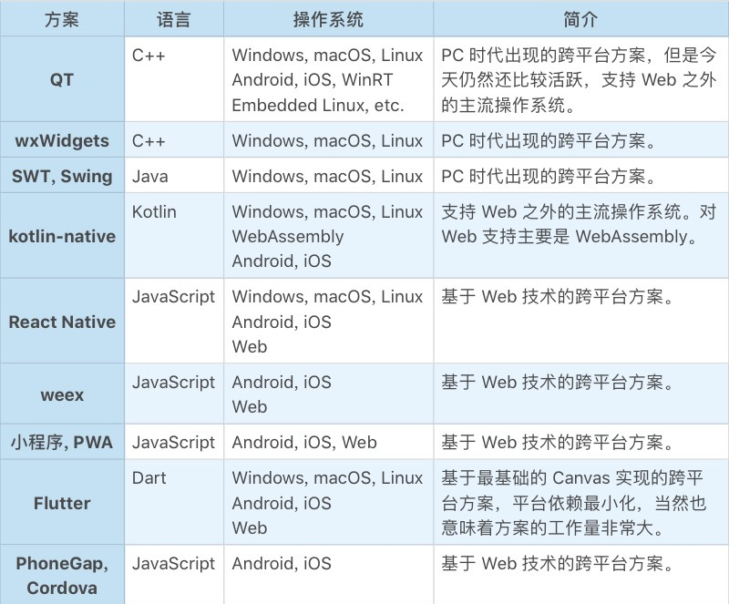
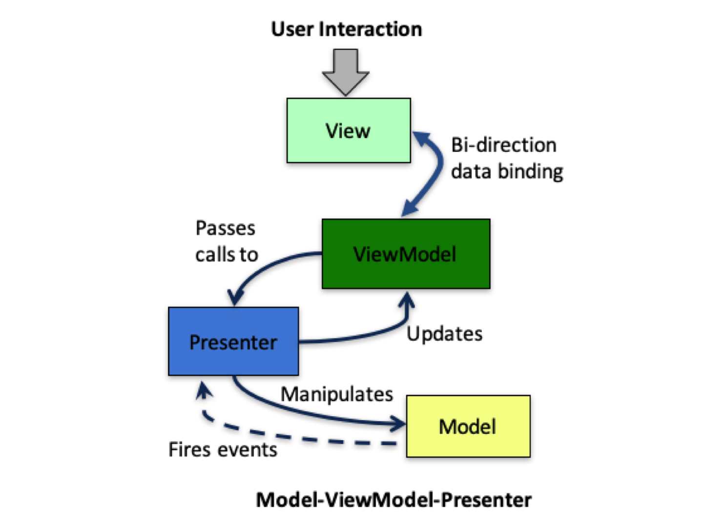
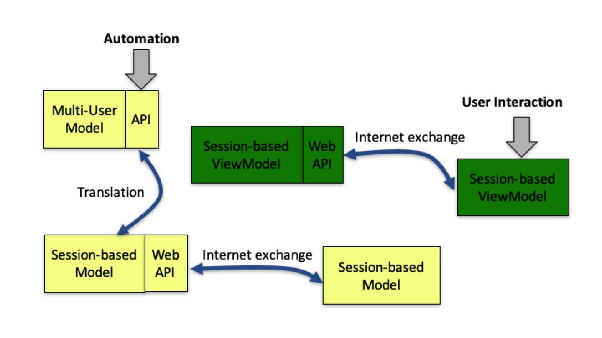

- 00 开篇词 怎样成长为优秀的软件架构师？.md
- 01 架构设计的宏观视角.md
- 02 大厦基石：无生有，有生万物.md
- 03 汇编：编程语言的诞生.md
- 04 编程语言的进化.md
- 05 思考题解读：如何实现可自我迭代的计算机？.md
- 06 操作系统进场.md
- 07 软件运行机制及内存管理.md
- 08 操作系统内核与编程接口.md
- 09 外存管理与文件系统.md
- 10 输入和输出设备：交互的演进.md
- 11 多任务：进程、线程与协程.md
- 12 进程内协同：同步、互斥与通讯.md
- 13 进程间的同步互斥、资源共享与通讯.md
- 14 IP 网络：连接世界的桥梁.md
- 15 可编程的互联网世界.md
- 16 安全管理：数字世界的守护.md
- 17 架构：需求分析 (上).md
- 18 架构：需求分析 (下) · 实战案例.md
- 19 基础平台篇：回顾与总结.md
- 20 桌面开发的宏观视角.md
- 21 图形界面程序的框架.md
- 22 桌面程序的架构建议.md
- 23 Web开发：浏览器、小程序与PWA.md
- 24 跨平台与 Web 开发的建议.md
- 25 桌面开发的未来.md
- 26 实战（一）：怎么设计一个“画图”程序？.md
- 27 实战（二）：怎么设计一个“画图”程序？.md
- 28 实战（三）：怎么设计一个“画图”程序？.md
- 29 实战（四）：怎么设计一个“画图”程序？.md
- 30 实战（五）：怎么设计一个“画图”程序？.md
- 31 辅助界面元素的架构设计.md
- 32 架构：系统的概要设计.md
- 33 桌面开发篇：回顾与总结.md
- 34 服务端开发的宏观视角.md
- 35 流量调度与负载均衡.md
- 36 业务状态与存储中间件.md
- 37 键值存储与数据库.md
- 38 文件系统与对象存储.md
- 39 存储与缓存.md
- 40 服务端的业务架构建议.md
- 41 实战（一）：“画图”程序后端实战.md
- 42 实战（二）：“画图”程序后端实战.md
- 43 实战（三）：“画图”程序后端实战.md
- 44 实战（四）：“画图”程序后端实战.md
- 45 架构：怎么做详细设计？.md
- 46 服务端开发篇：回顾与总结.md
- 47 服务治理的宏观视角.md
- 48 事务与工程：什么是工程师思维？.md
- 49 发布、升级与版本管理.md
- 50 日志、监控与报警.md
- 51 故障域与故障预案.md
- 52 故障排查与根因分析.md
- 53 过载保护与容量规划.md
- 54 业务的可支持性与持续运营.md
- 55 云计算、容器革命与服务端的未来.md
- 56 服务治理篇：回顾与总结.md
- 57 心性：架构师的修炼之道.md
- 58 如何判断架构设计的优劣？.md
- 59 少谈点框架，多谈点业务.md
- 60 架构分解：边界，不断重新审视边界.md
- 61 全局性功能的架构设计.md
- 62 重新认识开闭原则 (OCP).md
- 63 接口设计的准则.md
- 64 不断完善的架构范式.md
- 65 架构范式：文本处理.md
- 66 架构老化与重构.md
- 67 架构思维篇：回顾与总结.md
- 68 软件工程的宏观视角.md
- 69 团队的共识管理.md
- 70 怎么写设计文档？.md
- 71 如何阅读别人的代码？.md
- 72 发布单元与版本管理.md
- 73 软件质量管理：单元测试、持续构建与发布.md
- 74 开源、云服务与外包管理.md
- 75 软件版本迭代的规划.md
- 76 软件工程的未来.md
- 77 软件工程篇：回顾与总结.md
- 加餐 如何做HTTP服务的测试？.md
- 加餐 实战：“画图程序” 的整体架构.md
- 加餐 怎么保障发布的效率与质量？.md
- 热点观察 我看Facebook发币（上）：区块链、比特币与Libra币.md
- 热点观察 我看Facebook发币（下）：深入浅出理解 Libra 币.md
- 用户故事 站在更高的视角看架构.md
- 答疑解惑 想当架构师，我需要成为“全才”吗？.md
- 结束语 放下技术人的身段，用极限思维提升架构能力.md
- 课外阅读 从《孙子兵法》看底层的自然法则.md
24 跨平台与 Web 开发的建议
你好，我是七牛云许式伟。
上一讲我们聊了浏览器，以及移动浏览器之争：小程序与 PWA。
当我们思考浏览器从技术上带来了什么的时候，我们可以把它分为两点。
- 跨平台桌面程序开发；
- Web 开发（B/S 架构的新型应用）。
今天我们分别就跨平台桌面程序和 Web 开发展开来聊一聊。
跨平台桌面程序开发
跨平台的桌面程序开发是一个超级难题。无数人前仆后继，各种方案层出不穷，但至今为止，仍然没有称得上真正深入人心的解决方案。
原因很简单，因为桌面程序本身的范畴在变。有两个关键的因素会导致桌面开发产生巨大的差异性。
一个因素自然是操作系统。不同的操作系统抽象的界面程序框架并不一致。这些不一致必然导致开发工作量的增加。
放弃某个操作系统，就意味着放弃某个流量入口，也就意味着放弃这些用户。所以虽然很麻烦，我们还是不得不支持着每一个主流的操作系统。
另一个因素是屏幕尺寸。就算相同的操作系统，在不同尺寸的屏幕上，交互的范式也会存在很大的差异性，这也会导致不低的跨平台工作量。
首先我们看下操作系统。
- PC 本地：Windows，macOS，Linux 等等；
- PC Web：Chrome，Safari，FireFox 等等；
- Mobile 本地：Android，iOS 等等；
- Mobile Web：小程序，PWA 等等。
我们再看下屏幕尺寸。
- 大屏：PC、笔记本，Pad 等等；
- 中屏：手机；
- 小屏：手表。
如此繁复多样的终端类型，无怪跨平台如此之难。我们来总结一下当前都有哪些跨平台的解决方案。

这个列表只是沧海一粟。之所以没有列那么多，也是因为大部分的跨平台框架都已经不怎么活跃，已经无疾而终了。
目前来说，还很难说哪个方案会胜出。
关于跨平台开发，我觉得有一句话特别深刻：“每一次统一的努力，都最终变成新的分裂”。当然，这样的事情在很多领域都会发生，只是跨平台开发更加如此。
但是无论如何，跨平台的梦还会继续。
Web 开发
聊完了跨平台，我们来聊聊浏览器带来的另一面：Web 开发。
Web 的 B/S 架构意味着编写软件有了更高的复杂性。这主要表现在以下几个方面。
其一，多用户。 有了 Server 端，意味着用户的数据不再是保存在 Client（Browser）端，而是存储在 Server 端。
其二，更高的数据可靠性要求。 数据在 Client 端，客户自己对数据的可靠性负责。硬盘坏了，数据丢了，用户会后悔没有对数据进行备份。
但是一旦数据在 Server 端，数据可靠性的责任方就到了软件厂商这边。如果厂商不小心把数据搞丢了，用户就会跳起来。
其三，更多可能的分工安排。 详细来说，Web 应用从流派来说，分为两大类：胖前端与胖后端。
所谓胖前端，是指把尽可能多的业务逻辑放在前端。极端情况下，整个网站就是一个单页的应用。胖前端无论开发体验还是用户体验，都更接近于本地应用（Native App）。
所谓胖后端，是指主要逻辑都在后端，包括界面交互的事件响应，也通过网络调用交给了后端来实现。
我们先看客户端（Client），也就是浏览器端（Browser）。上一讲我们提到，浏览器的界面框架并没有窗口系统，它通过 HTML+CSS 来描述界面。
HTML+CSS 与其理解为 View 层，不如理解为 ViewModel 层，因为 HTML DOM 从数据角度完整描述了界面的样子。而 View 层已经被浏览器自己实现了。
这极大简化了界面开发的复杂性，因为界面的局部更新是一个复杂的话题，今天浏览器通过引入 HTML+CSS 这样的 ViewModel 层把它解决了。
这个时候我们重新看 MVC 框架在浏览器下的样子，你会发现它变成了 MVMP 模式，全称为 “Model-ViewModel-Presenter”。

首先，我们看事件响应过程。 浏览器的 View 收到了用户的交互事件，它把这些事件委托（delegate）给了 ViewModel 层，并且通过 HTML DOM 暴露出来。通过修改 HTML 元素的事件响应属性，一般名字叫 onXXX（比如 onclick），可以获得事件的响应机会。
然后我们看 Model 层的数据变化（DataChanged）事件。 在标准的 MVC 模式中，Model 层的数据变化是通知到 View 层，但是在浏览器下 View 是由浏览器实现的，要想让它接受 DataChanged 事件并且去处理是不太可能了。
所以解决思路自然是让 Controlller 层来做，这样就变成了 MVP 模式。 但是我们又不是标准的 MVP，因为 Presenter 层更新界面（Update View）并不是操作 View，而是 ViewModel。
综上，浏览器下的 MVC，最终实际上是 MVMP（Model-ViewModel-Presenter）。
聊完了浏览器端，我们在来看下服务端（Server）。虽然这一章我们的重点不是聊服务端，但是为了有个完整的认识，我们还是要概要地梳理一下 Server 端的架构。

前面我们在 “[22 | 桌面程序的架构建议]” 中，曾提到桌面软件除了要支持用户交互外，另一个很重要的需求是提供应用程序的二次开发接口（API）。
到了 Web 开发，我们同样需要二次开发接口，只不过这个二次开发接口不再是在 Client 端完成的，而是在 Server 端完成。Server 端支持直接的 API 调用，以支持自动化（Automation）方面的需求。
所以，对 Server 端来说，最底层的是一个多租户的 Model 层（Multi-User Model），它实现了自动化（Automation）所需的 API。
在 Multi-User Model 层之上，有一个 Web 层。Web 层和 Model 层的假设不同，Web 层是基于会话的（Session-based），因为它负责用户的接入，每个用户登录后，会形成一个个会话（Session）。
如果我们对Web 层细究的话，又分为 Model 层和 ViewModel 层。为了区分，Web 这边的 Model 层我们叫它 Session-based Model。相应地，ViewModel 层我们叫它 Session-based ViewModel。
在服务端，Session-based Model 和 Session-based ViewModel 并不发生直接关联，它们通过自己网络遥控浏览器这一侧的 Model 和 ViewModel，从而响应用户的交互。
Session-based Model 是什么样的呢？它其实是 Multi-User Model 层的转译。把多租户的 API 转译成单租户的场景。所以这一层并不需要太多的代码，甚至理论上自动实现也是有可能的。
Session-based ViewModel 是一些 HTML+JavaScript+CSS 文件。它是真正的 Web 业务入口。它通过互联网把自己的数据返回给浏览器，浏览器基于 ViewModel 渲染出 View，这样整个系统就运转起来了。
结语
今天我们聊了 Web 带来的两个重要改变。一个是跨平台，一个是 Web 开发，即 B/S 架构下的新型应用到底应该怎么实现。
从跨平台来说，这个话题是桌面程序员（也叫“大前端”）永远的痛。计划赶不上变化，用来形容大前端程序员面临的窘境是一点都不过分的。一个玩意还没搞熟悉了，另一个东西又出来了，变化太快，要跟上实属不易。
从 Web 开发来说，MVC 变成了 MVMP（Model-ViewModel-Presenter）。我们和单机的桌面软件一样的建议，认真对待 Model 层，认真思考它的使用接口是什么样的，把 Model 层做厚。
如果你对今天的内容有什么思考与解读，欢迎给我留言，我们一起讨论。下一讲我们将结合一个实际的案例，来讲解一下桌面开发（含单机软件和 Web）到底是什么样的。
如果你觉得有所收获，也欢迎把文章分享给你的朋友。感谢你的收听，我们下期再见。
© 2019 - 2023 Liangliang Lee. Powered by gin and hexo-theme-book.